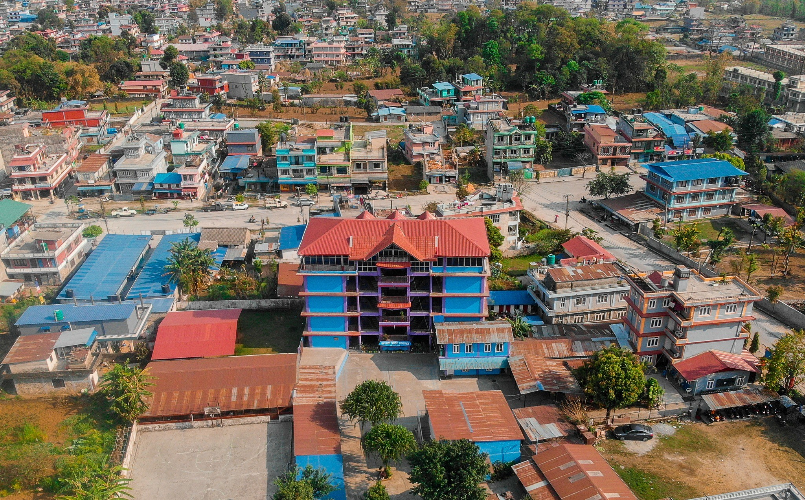
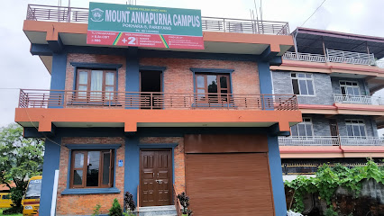

I completed my pre classes to my higher secondary education in Nepal from 2 schools. I took a major Maths as my subject in my higher secondary education.
I studied in this school for about 12years. The school is located in Lamachaur, Pokhara, Nepal. My school was considered one of the best schools of Pokhara city. The school was established on 2049 BS(Bikram Sambat- Nepal uses a special and different calender system than AD.)
My 2 years of higher secondary began in this college. This is the oldest college in Pokhara city where, sceince major and maths major was taught. This school was established in 1992 BS.